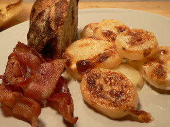

Scalloped potatoes
With nothing in the house to eat and various evening plans impeding my FreshDirect order this week, I decided to go rustic tonight and make scalloped potatoes, using a recipe from Ruth Reichl’s book.

n8 was thrilled, since he loves anything that’s baked and creamy. I served it with a leftover hunk of raisin bread and some crispy bacon. Here’s how to make really good scalloped potatoes that will please your man:
Preheat the oven to 325ºF. Rub a 9×13” baking dish, such as Pyrex, with a cut garlic clove, then coat it thickly with about a tablespoon of unsalted butter. Heat one cup of milk and 1.5 cups of heavy cream to just short of a boil, add salt and pepper, and remove from heat. Cut up about two pounds of potatoes, such as Russet or Yukon Gold, into 1/4” slices, such as you see in the picture, and layer them in the pan. Pour the cream mixture over the potatoes (it should come close to the top of them), and bake for about one and a half hours, or until the potatoes are very soft and browned on top.
Perhaps my mom or grandma has other ideas about scalloped potatoes, and I’d love to hear them, but I can’t imagine them being much better than these!
Comments
A dinner of butter, cream, cheese, potatoes and bacon. Those were the days!
I usually layer mine with cheese and onions but these look and sound delicious. I just have one question; did you use your new v-slicer to cut the potatoes?
Mommy
Ooh, cheese and onions sound divine. Next time for sure! I wanted to put cheese in but I also wanted to follow Ruth’s directions.
I didn’t use my v-slicer this time but I have used it a few times. It works amazingly well, although the sharpness of it scares me.
I also layer mine with cheese and onions, a tad of flour, salt and pepper. I add the cold milk then but sometimes they curdle a bit and other times they are fantastic. Can’t figure it out, so want to try your recipe. Sounds yummy! and easier than mine. Wondering whether to cook with lid on or not. probably would cook a bit faster with lid on, but would not get crispy on top. I add a layer of grated cheese last so they get a bit crispy.
Add a comment